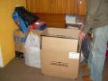

A csak ma délig érkezett anyagok között több érdekeset is találtam, mert tartozom egy
korábbi olvasói cikk publikálásával, úgyhogy következzék a mai olvasnivaló. Először
Vhailor
cikke:Szlovákia
Ez
a cikk Szlovákiáról fog szólni és a szlovákokról, illetve arról, hogy hogyan viszonyulnak ők
hozzánk, magyarokhoz. Magyarországon, saját tapasztalataim szerint, nagyon eltérő vélemények
uralkodnak a szlovákokkal kapcsolatban. Ennek a cikknek az apropója egy beszélgetés egy
magyarországi barátommal – az ő véleménye kb. úgy néz ki, hogy a szlovákokkal le kell ülni,
tárgyalni, és meg kell velük egyezni arról, hogy adják át nekünk azt a területet, ahol magyarok
élnek (valamilyen autonómia formájában), és éljünk tovább békességben. Én erre neki azt válaszoltam,
hogy ezek sose fognak abba beleegyezni, hogy bármit is átadjanak nekünk. Erre pedig csodálkozott,
hogy miért. Hát, ez a cikk erről a „miértről” fog
szólni.
Előre leszögezem, hogy én személyesen mindenféle fegyveres
vagy erőszakos megoldást elutasítok, egyrészt nem hiszem, hogy bárki is jól járna azzal, ha kitörne
egy háború, másrészt azok, akik általában az erőszakos megoldás hívei kb. úgy kezdik érvelésüket,
hogy „egy magyar honvéd simán elbánik 10-20 országbitorlóval, és egyébként is ez a mi
földünk”. Nincsenek tisztában sokmindennel – először is, ha már a katonai megoldásról
beszél valaki, akkor figyelembe kell venni egy pár kulcsfontosságú (stratégiai) tényezőt. Ha csak a
térképet nézzük – hegygerinceket sokkal nehezebb bevenni, mint síkságokat (1920-ban a
határokat elsősorban stratégiai szempontok alapján húzták meg), ergo a támadónak több katonára volna
szüksége, másrészt, van egy reális elképzelése valakinek arról, hogy mennyi idő és pénz kellene
hozzá, hogy felfegyverezzék a magyar honvédséget? Mondjuk legalább egy olyan szintre, hogy bevethető
legyen. Na jó, elég az ilyen fantazmagóriákból …, folytassuk
mással.
Ahogy már említettem, Magyarországon nagyon különböző
vélemények vannak arról, hogy hogyan kell viszonyulni a szlovákokhoz – van, aki ellenségnek
tekinti őket, akit le kell győzni, van, aki partnerként tekint rájuk, akit meg kell győzni és együtt
kell vele működni. Bár az elutasító vélemények inkább a jobboldalhoz köthetőek, nem lehet
általánosítani. Mondjuk, találkoztam magyar skinheadekkel, akik szerint össze kell fogni velük azért
mert ők is fehérek, ha pedig a kisebbségi kérdésről faggatom őket, akkor a véleményük többnyire
megegyezik a fent említett barátom véleményével. Még jó, hogy ezek a srácok nem beszélnek szlovákul,
mert ha beszélnének, akkor nagyon gyorsan rájönnének arra, hogy azok a fehér
„testvérek” a határon túlról, akikkel ők ki akarnak egyezni a kiegyezést egészen
másképp képzelik el (ismerek én a túloldalról is egy pár „testvért”, akkor tudom). A
másik oldal szerint a tárgyalási alap kb. úgy nézne ki, hogy a kisebbségi magyarokat hagyni kell
nyugodtan asszimilálni, ne szóljanak bele Szlovákia belügyeibe, tekintsék a mai határokat
örökkévalónak és aztán legyünk „testvérek” a „Nemzetek Európájában”.
Nemtudom, hogy egy nemzeti érzelmű ember elfogadna-e egy ilyen tárgyalási alapot, szerintem Eörsi
Mátyás és a hozzája hasonló emberkék kivételével talán senki (ők is nemzeti érzelműek, más kérdés
viszont, hogy milyen nemzethez tartoznak). Pedig ha a szlovák politikai palettát nézzük, akkor
többnyire ez az általános szlovák álláspont a magyarokkal kapcsolatban. Vannak harciasabb
képviselői, mint pl. a nemzeti párt, akik szerint a magyarok beolvasztása túl lassan halad előre,
vannak kevésbé harcias képviselői, akik szerint a legjobb, ha hátradőlnek és hagyják az időt
dolgozni, pedig az idő nekik dolgozik – bárki, akinek más a véleménye javasolnám, hogy
egyszer menjen Újvárba, vagy tovább északra, és figyelje meg, hogy milyen nyelven beszélnek az
utcán az emberek. Nagyon kevés olyan szlovák van, aki a magyarokban, nem egy potenciális
ellenfelet, hanem egy potenciális partnert lát. Mondjuk, a személyes tapasztalatom alapján, a
nyíltan vagy burkoltan magyargyűlölők nincsenek olyan sokan, bár néha úgy tűnik, de az általános
beállítottság inkább negatív. Ellenfelek vagyunk számukra, némelyikek számára talán ellenségek, de
jóval több az olyan szlovák, aki egy ellenfelet lát a magyarokban, akivel meg kell birkózni, mint
egy ellenséget, akit meg kell semmisíteni. Hogy ez miért van így, annak is megvannak az okai,
lehet a történelemre, vagy inkább a történelemszemléletre hivatkozni, de ez már egy más téma.
Tény, hogy nem szeretnek bennünket és nem akarnak velünk kibékülni (legalábbis nem olyan
feltételek mellett, amilyeneket bármilyen tisztességes magyar ember elfogadhatónak
tartana).
Srácok,
Magyarországon fel kellene ébredni, Szlovákia nem Felvidék, és a szlovákok nem tótok. Attól, hogy
valakinek ez nem tetszik, az országuk még meg nem szűnik és nemzeti érzelmük meg nem gyengül. Le
lehet őket nézni, lehet azt mondani, hogy nincs hazájuk, nincs történelmük, hogy lopott ország
stb., csakhogy ez nem vezet sehova. Nincs semmi értelme az ilyesmivel piszkálni őket, sőt, talán ez
a legnagyobb hiba. Csak akkor van értelme a provokációnak, ha a provokátor mögött van erő is
– ha odamegyünk egy cigánybandához, és „lebüdöscigányozzuk” őket, akkor ne
csodálkozzunk, ha ebből verekedés lesz. A mai helyzetben, akárhogy is nézzük (nemzettudat, haderő,
gazdaság, demográfia, összetartás …), a másik oldal erősebb, illetve jobban áll, akár
tetszik ez valakinek, akár nem. Ilyen helyzetben csak ésszel lehet győzni, erővel soha. Ahogy
mondtam, a többségük ellenfélként/vetélytársként tekint a magyarságra, kezdetnek mondjuk jó lenne,
ha mi is így tekintenénk rájuk, ha már semmi másért, akkor legalább azért, mert ők is ezt
csinálják. Aztán pedig jó lenne, ha komolyan vennénk őket, nem kell őket szeretni, de NEM SZABAD
őket lenézni. És utoljára talán a legfontosabb – meg kellene ismerni őket, mert egy
ismeretlen ellenfelet nehéz legyőzni, pláne akkor, ha gyengébbek vagyunk nála.
Az Erdélyi Magyar Ifjak
üzenik, hogy a Bombagyár karácsonyi játékgyűjtése kapcsán összegyűlt javak fele eljutott a
zentagunarasi gyermekekhez. A játékok másik felét csángó gyermekek kapták. (A mellékelt kép elég
csalóka, mert épp a legnagyobb doboz van az előtérben, meg épp az nem látszik, ami benne van, de
azért képzeljük el a boldog kisgyerekeket.)
Közben elkészült a Bombagyár Magazin első
látványterve, melyből két oldalt meg is mutatnék az érdeklődőknek:
Snetch nevű olvasónk úgy érzi, meggyalázzák a Télapót a pénz oltárán:
Üdv,
Tegnap éjjel a neten valamelyik weboldal ezt a reklámot
dobta föl:
Egy feljelentést szerintem megérne, hogy Szent Miklóst gyalázzák... A
képen alul szerepel a szolgáltató.
Snetch.
Egy kedves olvasónk, Magyarverő is
írt nekünk:
Nagy örömmel olvasom,hogy milyen dühösek vagytok. Remélem minél több
ilyen kellemes híröl adtok tudósítás.
Magyarok mindég egy csicska nép volt. Céltáblák vagytok
és lesztek. Hol vagytok ti!!!!! A béka segge alatt!!!!!!!!!
Szerintem ne dumáljatok hanem
dolgozatok,hogy megtűrjünk titeket az országunkba. Ha erősködni szeretnétek nem sok esélyt látok
arra ti valaha is nyertek.
Fogjátok be,mert ti féltek!!!! Kaphatok egy db pelust és
össze szarhatjátok magatokat.
Aki nálam dolgozik kénytelen cigányul megtanulni és csak is
ezt a csodálatos nyelvet használni vagy KIRÚGOM !!!!!!!
Többet kell dolgoznia hajtom ezeket a
barmokat,mert azok. Rádásul a bérükből is levonok a tesóknak.
Ezt kaki!
Gyurcsány is megmondta" ha nem tetszik valami el lehet meni az ORSZÁGUNKBÓL!!!!!!
Szerintem még az országnevét is meg kellene változtatni CIGÁNYIÁ RA: Ha valaki utána számol,már a
ROMÁK vagyis mi többségben vagyunk. Ha ez így van lesz itt kapszki rendesen.
Magyar verő
Egy olvasónk helyi találkozót szervez a bombagyárosoknak. Támogatunk minden
ilyen kezdeményezést, ahogyan eddig is támogattuk a káoszbrigádok önálló, sejtszerű működését is.
(eredményeket is értek így el, csak ezekről általában nem számolhatunk be). 2009-re sok dologgal
készülünk, jó volna, ha hasonló módon Ti is fölvállalnátok az ilyen ügyek szervezését saját
területeteken.
SEGÍTSETEK EBBEN
A bombagyár oldala
megtalálta a megfelelő utat ahhoz, hogy számtalan embert összehozzon és közösséget teremtsen. Ezt
felhasználva, azt szeretném elérni, hogy ezen közösség egy szelete tovább fejlődjön. Mi,
nyíregyházi bombagyár tagok összehozhatnánk egy offline, személyes találkozót. A szervezést én
vállalom. Ha környékbeli vagy és hazafi, és akarsz jönni a találkozóra, akkor jelentkezz ezen az
oldalon
http://www.szamurajblog.hu/komoly-dolog/ (itt
meg is vitathatjuk az estleges részleteket) vagy az email címemen:
karpataljaman(kukac)gmail(pont)com
Sokan vagyunk, közel egymáshoz, mégis nagyon távol.
Már nagyon itt van annak az ideje, hogy találkozunk, lássuk hasonlóságainkat, hogy teremthessünk
hasznos dolgokat. Mivel bombagyár tagnak is érzem magam, és nagyon sok alvó potenciált érzek itt
számos embernél, mindenképpen rászeretnék pillantani erre élőben is egy vacsora, vagy bármilyen
másfajta találkozó keretében. Ha sikerrel összejönne, úgy gondolom elég egyértelmű, hogy mi mindent
ki lehetne ebből hozni később.
Én pedig külön szeretném
ajánlani Nektek a
Zeller nevű gyárlakónk által forgalmazott
Otrantói ütközet című könyvet. Nekem is van belőle, és 2000 forintért remek karácsonyi ajándéknak
gondolom, mellyel egy magunkfajtát, sőt egyenesen bombagyárost támogatunk. A könyv megrendelhető a
Császári és Királyi Haditengerészeti Egyesület oldaláról
ide
kattintva.
Egy gyárlakónk küldi MC Columbo
klipjét, de most már tényleg ne írjatok, mert
ez még a fele se volt a ma, eddig beérkezett anyagoknak. Jövőre kitalálunk valamit az egyre növekvő
mennyiség kezelésére is.
A Bombagyár Rádió idei utolsó adását fölvettük, szerintem fontos
dolgokról beszélgetünk benne (köztük nagy hangsúlyt fektetve a Magyar Gárda elleni nevetséges
perjátékra). Hamarosan publikáljuk, türelem.